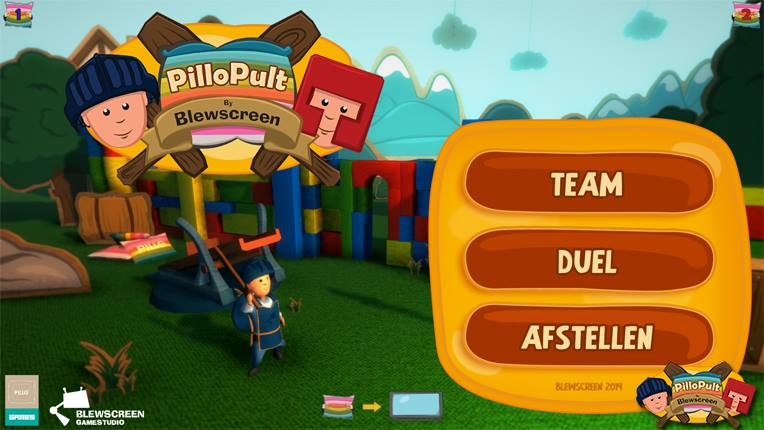
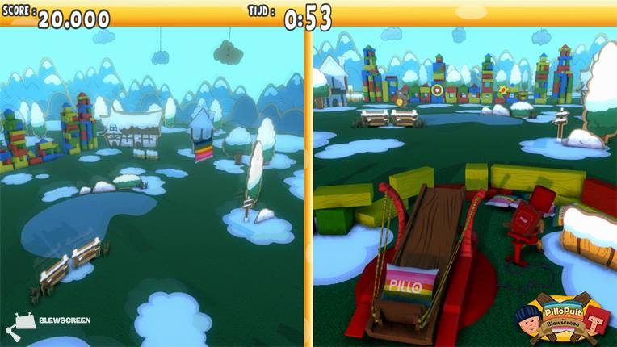

Pillow Pult
BlewScreen / January 2012
BlewScreen
Tools
Education
Internship
The game is built for the Pillo controller. The Pillo controller is a pillow that acts as 1 big pressure sensor designed for disabled people. The game lets players play together or against each other to destroy a block fort or each others fort. The game is specifically designed for the Pillo controller so everyone can play it from disabled to elderly.
On this project I worked as the main programmer, working with the provided SKD for Pillo to create the core gameplay, menus and other elements in Unity3d. We started from creating a simple prototype on which I further iterated based on feedback from my supervisor until we had the final game.  
© 2025 Maurits Laanbroek
•
Theme Moonwalk